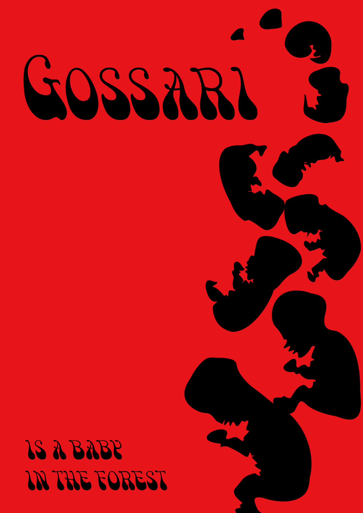
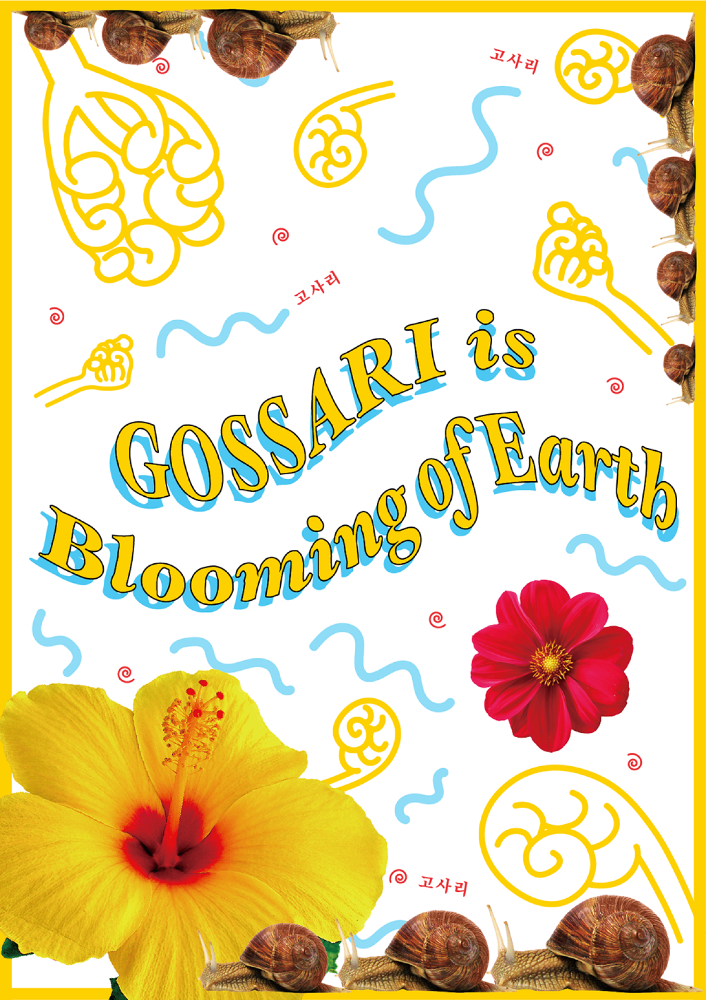
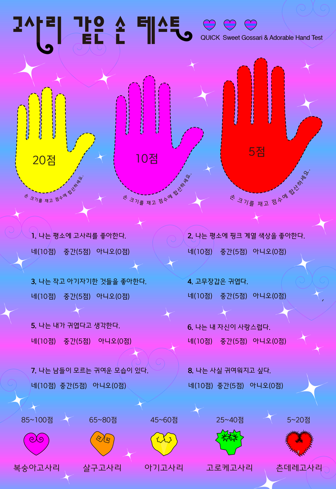
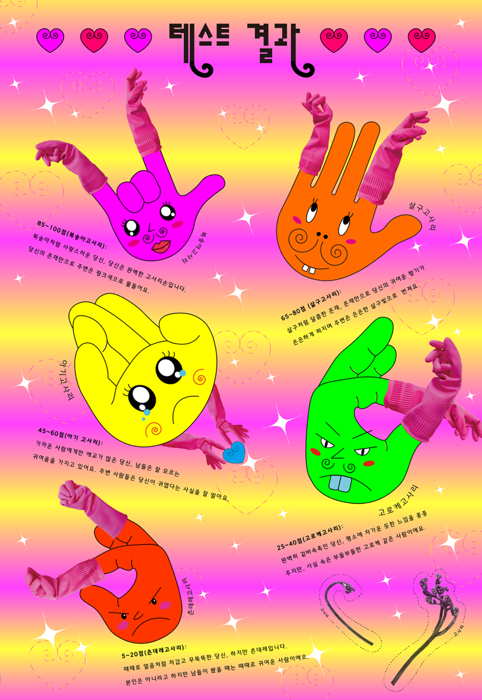

Project
Contact
seongseulgi21@gmail.com
Designer
Vegetable
성슬기
VEGETABLE
Category
Minimal Poster / Maximal Poster / Generative System
고사리같은 손이라는 포현에 주목하여 프로젝트를 진행하였다.
MINIMAL POSTER
MAXIMAL POSTER
GENERATIVE SYSTEM
Poster
Poster
Poster
맥시멀리즘이란 지구가 꽃을 피우는 것과 같다고 생각한다. 이런 점에서 고사리가 자라난 모습을 마치 지구가 꽃을 피운 것처럼 연상해 보았다.
고사리 같은 손이라는 말에서 연상하여 고사리 손으로 귀여움의 정도를 측정하는 시스템을 만들고 테스트지로 디자인하였다.
나에게 미니멀리즘이란 시적 표현이자 은유적 표현이다.
고사리같은 손이라는 말에서 연상하여 고사리의 구부러진 형태가 태아같다는 생각으로 미니멀 포스터를 디자인하였다.



